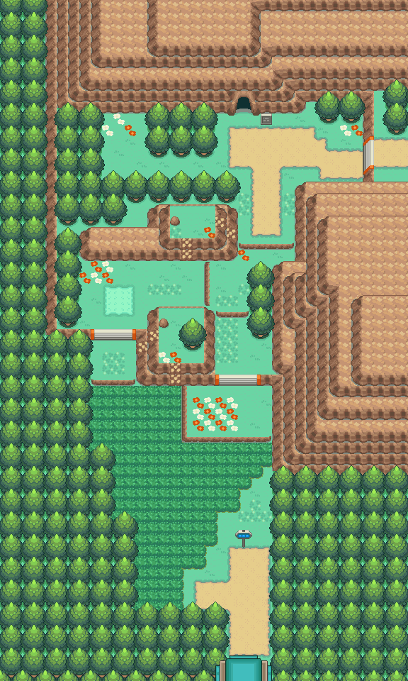
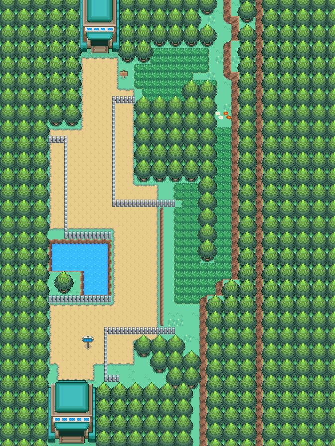
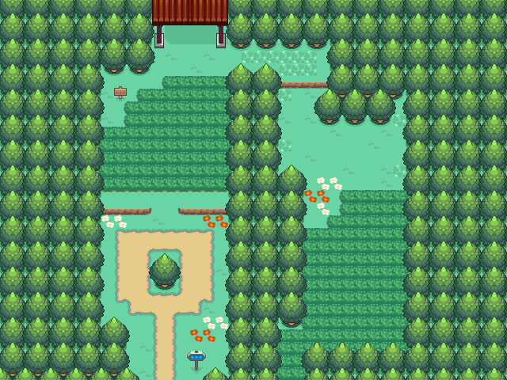
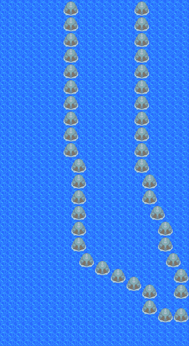

负电拍拍（全国图鉴 No.0312）

怎样获得
广播遭遇
- 46号道路 ｜ 周三（需播放「丰缘之声」） ｜ 槽权重 20 ｜ 地图：46号道路
- 29号道路 ｜ 周三（需播放「丰缘之声」） ｜ 槽权重 20 ｜ 地图：29号道路
- 33号道路 ｜ 周三（需播放「丰缘之声」） ｜ 槽权重 20 ｜ 地图：33号道路
- 34号道路 ｜ 周三（需播放「丰缘之声」） ｜ 槽权重 20 ｜ 地图：34号道路
- 35号道路 ｜ 周三（需播放「丰缘之声」） ｜ 槽权重 20 ｜ 地图：35号道路
- 自然公园 ｜ 周三（需播放「丰缘之声」） ｜ 槽权重 20 ｜ 地图：自然公园
- 36号道路 ｜ 周三（需播放「丰缘之声」） ｜ 槽权重 20 ｜ 地图：36号道路
- 37号道路 ｜ 周三（需播放「丰缘之声」） ｜ 槽权重 20 ｜ 地图：37号道路
- 38号道路 ｜ 周三（需播放「丰缘之声」） ｜ 槽权重 20 ｜ 地图：38号道路
- 39号道路 ｜ 周三（需播放「丰缘之声」） ｜ 槽权重 20 ｜ 地图：39号道路
- 34号道路 ｜ 周三（需播放「丰缘之声」） ｜ 槽权重 20、20 ｜ 地图：34号道路
- 周三未播放对应地区之声时的兜底表 ｜ 槽权重 20 ｜ 未播放对应地区之声时的兜底出现
进化
本数据集没有该槽的进化记录。
数据来源
- 内部槽：0354
- 属性：电 ｜ 种族值合计 405
- 种族值：HP 60 ｜ 攻击 40 ｜ 防御 50 ｜ 特攻 75 ｜ 特防 85 ｜ 速度 95
- 捕获率字段：200（表值；实际捕获还受精灵球/状态/等级影响）
- 蛋群：妖精 / 妖精 ｜ 成长曲线：MEDIUM_FAST
- 基础数据：
wiki_export/core/data/species.json - 全国图鉴映射：
wiki_export/core/data/national_dex.json - 进化数据：
wiki_export/core/data/evolutions.json - 获取数据：
wiki_export/world/data/acquisition_by_species.json（species_id 354） - 遭遇表：
wiki_export/world/data/encounters.json - 地图：
wiki_export/world/data/maps.json - 进化方式符号：
wiki_export/enrichment/reference_only/evolution_methods.json（参考表） - 道具/招式名称：
wiki_export/core/data/items.json、wiki_export/core/data/moves.json - 证据状态：仅有内部选槽权重；广播门控旗标语义未穷举
- 证据状态：兜底选择与广播门控条件未穷举
地点地图
共享RGB底图；点击可缩放定位。数字对应本页相关地点，不代表地图上全部事件。
46号道路

地图范围记录：当前资料没有精确人物／遭遇坐标。
29号道路


地图范围记录：当前资料没有精确人物／遭遇坐标。
33号道路


地图范围记录：当前资料没有精确人物／遭遇坐标。
34号道路

地图范围记录：当前资料没有精确人物／遭遇坐标。
35号道路

地图范围记录：当前资料没有精确人物／遭遇坐标。
自然公园

地图范围记录：当前资料没有精确人物／遭遇坐标。
展开其余 5 张地点地图
36号道路


地图范围记录：当前资料没有精确人物／遭遇坐标。
37号道路

地图范围记录：当前资料没有精确人物／遭遇坐标。
38号道路


地图范围记录：当前资料没有精确人物／遭遇坐标。
39号道路


地图范围记录：当前资料没有精确人物／遭遇坐标。
34号道路

地图范围记录：当前资料没有精确人物／遭遇坐标。